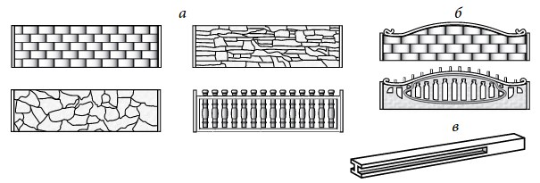
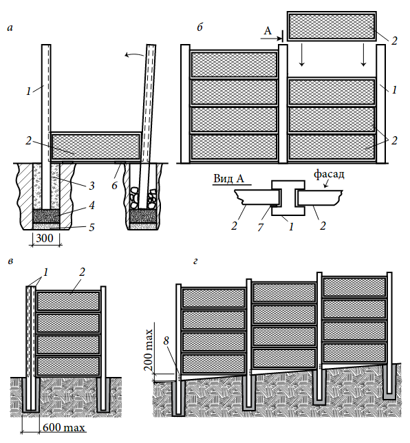

ЄВРОПАРКАНИ
Стандартні паркани з сірих залізобетонних плит, звичайно, не можна назвати особливо вдалим варіантом для власників приватних будинків. Вони, безумовно, надійні, коштують дешевше цегельних, але ні ділянку, ні вулицю не прикрасять. Звичайно, їх можна розмалювати графіті, але чи багато зможуть зробити так, щоб малюнок дійсно виглядав красиво? Крім того, для невеликої ділянки таку капітальну огорожу будувати - не найкраще рішення. Ви можете викликати застій повітря, що негативно позначиться не тільки на рослинності, але й на самопочутті мешканців садиби.
Бетонні панелі нового покоління (європаркани) виглядають більш привабливо. Їх виготовляють методом вібролиття з гранітного щебеню дрібної фракції, піску і цементу з використанням сталевої арматури. Поверхня цих плит може імітувати цеглу, природний необроблений камінь, плетиво, дерев'яні дошки, а технологія виготовлення дозволяє фарбувати їх в масі (рис. 44). Є й ажурні панелі, що дозволяють повітрю вільно проникати через огорожу. Тому так звані європаркани стали популярні не тільки серед дачників, але й у власників міських садиб.
До переваг європарканів належать невисока вартість, різноманітність форм і дизайнерських рішень, можливість створити стіну будь-якої висоти (від 50 см до 3 м), пожежобезпечність, надійність та довговічність (до 50 років), швидкість і простота установки, причому на будь-яких грунтах, без фундаменту і навіть на ділянці, що має досить крутий схил. Так як розміри і вага стандартних панелей невеликі (не більше 50-70 кг при габаритах 2000 × 500 × 45 мм), монтаж проводиться вручну дуже швидко і без залучення автокрана, нагадуючи збірку дитячого конструктора. Бригада з 3-4 людей може встановити за день до 20 погонних метрів огорожі висотою 2 м.
Недоліки європарканів теж досить істотні: погана провітрюваність ділянки, громіздка конструкція в порівнянні з дерев'яним і металевим парканом, схильність до температурних перепадів і зміщень нестійкого грунту. Якщо при монтажі не дотримуватися основних правил технології, то після зими паркан може розвалитися, а секції — розколотися. До того ж тильна сторона європаркана не відрізняється привабливістю, вона не має фактурної форми. Втім, її можна пофарбувати або покрити декоративною штукатуркою.
Для бетонування опорних стовпів слід використовувати цемент з гідрофобними добавками, що виключають накопичення вологи в бетоні.
Конструктивно панелі залізобетонного паркану виглядають так: сталева арматура, залита бетоном високої якості марки не нижче М300. Більш міцний варіант — паркани з бетонів М500 і вище. Вироби з марки М1000 вкрай рідкісні, і виглядають вони як справжні твори мистецтва, що більше нагадують філігранне чавунне лиття, ніж бетонну конструкцію. Зверніть увагу, мова йде саме про марки бетону, а не про марку цементу, з якого він виготовлений. Справа в тому, що виробники найчастіше вказують саме марку цементу, наприклад М500, з якої виготовлений бетон. Далі все залежить від пропорцій піску, щебеню, води і спеціальних добавок. На виході може вийти бетон М350. Правда, спеціальні добавки здатні значно покращити його якість, а недотримання рецептури, навпаки, знизити.

Елементи сучасних бетонних огорож: а — основні панелі; б — верхні панелі; в — стовпи
Купуючи панелі для паркану, ретельно огляньте їх і, якщо виявите ззовні арматуру або значні тріщини, краще відмовтеся від покупки: з часом арматура кородує і паркан зруйнується. Полотно повинно бути рівним і гладким, без видимих пошкоджень, можливі лише невеликі вади поверхні, які легко зашпаклювати.
Існує два основних види стовпів для монтажу секцій огорожі: цілісні залізобетонні стовпи з пазами і складальні «камені для стовпів». Залізобетонні стовпи з пазами мають такі розміри пазів: 0,5 м; 1,0 м; 1,5 м; 2,0 м; 2,5 м, що відповідають висоті огорожі. Нижня частина стовпа без пазів бетонується в грунт і має довжину 0,8 м або 1,3 м.
Набірні стовпи, що складаються з бетонних елементів, які мають висоту, кратну висоті однієї панелі — 0,5 м, при цьому загальна висота огорожі може бути більше 2,5 м. Для монтажу огорожі з набірними стовпами з каменів необхідна основа (арматура, труба), яка бетонується в грунт. Пустотілі камені набирають на основу, потім внутрішню частину набірного стовпа заливають бетонним розчином. Зверху набірний стовп закривають бетонним оголовям. Камені для стовпів виготовляють з 2 пазами, з 1 пазом і без пазів (воротні стовпи). В кутових стовпах пази можуть бути розташовані під кутом 90° один відносно одного. Набірні елементи стовпів можуть мати як фактуру природного каменю, так і гладку поверхню.
Роботи з монтажу паркану починають з розмітки місць установки стовпів з інтервалом, рівним довжині панелі огорожі. Плита європаркану має довжину рівно 2 м, але за рахунок товщини перемички стовпа і за рахунок допусків і зазорів відстань між центрами стовпів кожної секції приймається рівним 2,06 м. Швидше за все, загальна довжина конкретної огорожі навряд чи буде в точності кратна цій відстані, тому деякі плити доведеться різати.
Заздалегідь сплануйте, де будуть ворота. Якщо ворота вже є і вони металеві, то краще всього до опорних стовпів вертикально приварити куточки 30 × 30 мм так, щоб сформувався паз шириною 50 мм для установки бетонної плити. Звичайно, можна вкопати поруч з воротами і бетонні стовпи. Такий варіант кращий, коли разом з євро-огорожею одночасно встановлюють нові ворота і хвіртку.
При плануванні потрібно враховувати, що стовп европаркану має в перерізі розмір 150 × 150 мм Це означає, що до загальної довжини секцій треба додати ще 150 мм за рахунок того, що перший і останній стовпи виступають в сторони від центру ями. Наприклад, якщо ви встановите 10 секцій, загальна довжина огорожі буде не 2,06 × 10 = 20,6 м, а 20,75 м.
Місця встановлення стовпів фіксують кілочками, потім натягують шнур, який позначає горизонтальний нульовий рівень.
На місці кутового стовпа треба пробурити отвір ∅300 мм на глибину 800 мм. Глибина установки стовпа становить 700 мм, решта 100 мм відводять на шар підсипання. У разі якщо грунт на ділянці пучиністий, стовп заглиблюють не менше ніж на 1200 мм. Крім того, рекомендується передбачити вентиляційний зазор 30-40 мм між землею і нижньою планкою плити огорожі.
Грунт трамбують і виконують підсипку з піску і щебеню. Зверху щебеневої подушки встановлюють стовп. Акуратно вимірюють рівність розташування стовпа, його висоту і кут нахилу. Потім стовп потрібно зафіксувати в свердловині за допомогою бутової цегли або будівельного сміття. Бут трамбують і засипають грубозернистим піском, який для ущільнення грунтовно поливають водою. Високі стовпи додатково підпирають тимчасовими дерев'яними підкосами.
Коли стовп буде ідеально виставлений, в свердловину заливають бетонний розчин і чекають, поки він схопиться. При нормальній температурі це займе мінімум 6 годин, але краще почекати не менше доби. Від правильної установки першого стовпа багато залежить, і поспіх тут недоречний, оскільки може обійтися згодом занадто дорого.
Тепер відмірюють від встановленого стовпа рівно 2060 мм і бурять свердловину під другий стовп, обов'язково орієнтуючись по шнуру. Точно так само утрамбовують основу і виконують підсипку.
Беруть одну нижню секцію европаркану і встановлюють її одним з торців в паз зафіксованого стовпа. Зазвичай глибина паза становить 40 мм, плита повинна зайти в паз на глибину 30 мм. Панель підпирають дошками чи арматурними прутами, приблизно вирівнявши його по горизонталі (Панель можна і не підпирати, якщо вона в подальшому буде знаходитись на рівні землі або на цоколі (останній, як і спільний фундамент, роблять дуже рідко і лише у випадку вкрай несприятливого грунту). Але тонкий вентиляційний зазор між грунтом і прольотом огорожі все-таки краще залишити). Потім вставляють на другу свердловину стовп і насувають його на секцію так, щоб вона зайшла в паз стовпа на 30 мм (рис. 45, а). Розташування бетонної секції точно вирівнюють по шнуру, другий стовп вирівнюють строго по вертикалі і фіксують у такому положенні, виконавши розпорку бутовою цеглою. Якщо є необхідність, стовп можна підперти розпірками зверху.
Після цього процедура встановлення стовпа і секції повторюється: від стовпа відмірюють 2060 мм і знову бурять свердловину, виконують підсипку, встановлюють бетонну секцію в паз попереднього стовпа, встановлюють новий стовп і насувають його на секцію, після чого фіксують стовп бутом.

Монтаж плит європаркана: а — складання першої секції, б — установка бетонних панелей; в — монтаж в куті; г — монтаж паркану на схилі: 1 — стовп; 2 — панель; 3 — забутовка (згодом залита бетоном); 4 — щебінь; 5 — пісок; 6 — вирівнююча підкладка; 7 — дерев'яна розпірка; 8 — підпора в пазу
У кутах і на поворотах паркана вкопують по два стовпа в одну яму в точці повороту, орієнтуючи кожен стовп уздовж своєї лінії установки (рис. 45, в ). Якщо кут повороту невеликий (приблизно до 25°), то можна обійтися одним стовпом — ширина паза дозволить вставити плити під кутом. Ще краще для здійснення повороту паркана використовувати набірний стовп з кутовими пазами.
Коли всі стовпи і нижні секції будуть встановлені, слід ще раз перевірити рівність розташування всіх частин огорожі.
Тепер встановлюють всі інші бетонні секції. Для цього знадобиться 2-3 людини. Плити піднімають на висоту паркану і заводять їх у пази стовпів, стежачи за тим, щоб секції не перекосило і вони розташовувалися рівно одна над іншою (рис. 45, б ). Можна було, звичайно, встановлювати відразу всі збірні секції в один проліт. Але в такому випадку можливі перекоси з-за нерівномірного тиску на стовпи — поки дійде черга до завантаження наступного прольоту, перший вже прийме повну або майже повну осадку.
Якщо огорожа розташовується на дуже нерівній місцевості, проблему схилів вирішують за рахунок використання стовпів різної довжини або встановлення сходинок. Висота установки кожного стовпа в таких випадках розраховується індивідуально. На нерівній ділянці стовпи будуть мати велику висоту. При цьому перепад висоти між сусідніми прольотами не повинен перевищувати десяту частину довжини панелі (мал. 45, г ).
Щоб бетонна секція розташовувалася в пазах стовпів строго горизонтально, необхідно в паз того стовпа, що знаходиться нижче за схилом, вставити дерев'яний брусок, який буде грати роль підпорки під плиту. Довжину бруска потрібно розрахувати дуже точно. Якщо його висоти не вистачило, між розпіркою і плитою підбивають дерев'яні тріски та клини. Альтернативний метод — підрізка плити з боку більш високого рівня грунту.
Після того як всі секції паркану на всю висоту будуть встановлені, знову перевіряють вертикалі і горизонталі. Якщо результати перевірки влаштовують, заливають всі стовпи бетонним розчином. До кінця установки всіх секцій заливати бетоном стовпи не можна. При виконанні робіт за описаною методикою є можливість виправити положення стовпів і огорожі в цілому: посунути, нахилити і т. п. Якщо ж стовпи зафіксувати бетоном, то виправити помилки вже неможливо.
Після застигання бетону необхідно зафіксувати секції в пазах стовпів, інакше вони можуть розгойдуватися від вітру і битися об огородження або неприємно скреготати. Для цього з тильної сторони між секцією і стовпом необхідно вбити розпірки — дерев'яні клинці (рис. 45, вид А ). Не слід фіксувати бетонні секції в стовпах за допомогою бетонного розчину. В результаті коливань температури і вологості бетон буде розширюватися або стискуватися. Якщо плита не буде мати можливості вільно переміщуватись по пазу стовпа, вона розколе його або розколеться сама. Також слід враховувати можливе зміщення грунту. В одному місці він може просісти або, навпаки, спучитися, при цьому не зафіксована намертво плита просто - змінить своє положення, рухаючись всередині паза. Дерев'яні клини не будуть жорстко утримувати плиту між стовпами.
Професійні бригади зазвичай спочатку встановлюють всі стовпи, а потім вставляють в пази бетонні секції, проте цей спосіб має багато недоліків: варто схибити в розмітці — і вся робота нанівець. Занадто малий зазор між секцією і стовпом не дає права на помилку. Значно легше встановлювати стовпи, строго орієнтуючись на розміри вже вставленої плити.
Змонтований європаркани легко пофарбувати в будь-який колір. Якщо він виготовлений зовсім недавно, дайте йому постояти кілька місяців, нехай випарується зайва волога. Цей процес непомітний для ока, а ось грунтовка і фарба можуть покритися тріщинами.
Штукатурні роботи перед фарбуванням не потрібні, але грунтувати поверхню потрібно обов'язково. Переконайтеся, що бетонна поверхня суха і чиста, зашпатлюйте (якщо треба) дрібні дефекти. Використовуйте матеріали, призначені для зовнішніх робіт. Найкраще фарбувати фасадною фарбою.
Умови фарбування також важливі: роботу слід проводити при температурі вище 5 °С і вологості повітря не більше 80 %. Не варто працювати з фарбою в дуже спекотний день, так як фарба повинна сохнути певний час, а швидкісна сушка під палючим сонцем може призвести до її розтріскування. Не любить спеки і шпаклівка: для набору міцності їй потрібна вода, а якщо вона випарується блискавично, ви отримаєте неякісну поверхню з сіткою тріщин.